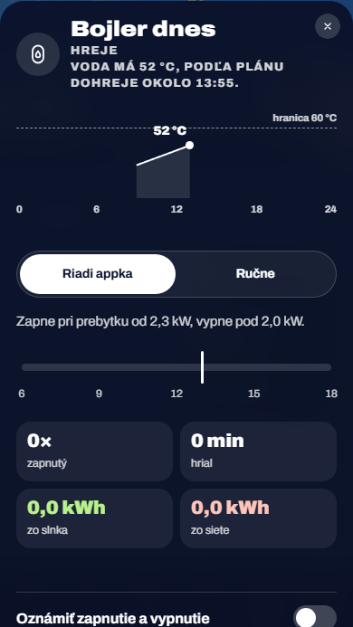

Bojler dnes – nový panel
Návrh, 24. 11. 2026. Panel, ktorý sa otvorí po ťuknutí na dlaždicu bojlera na karte Teraz. Rástol postupne (teplota vody, prepínač riadenia, pás dňa, štyri čísla, behy, oznámenia) a teraz je rozhádzaný. Čísla a časy v obrázkoch sú ilustračné: bojler dnes zapol dvakrát, teraz je 13:30 a hreje, voda má 58 °C.
Ako je to teraz

Čo je na ňom zlé
- Dve časové osi: teplota má 0 – 24 h, pás behov 6 – 18 h. Tá istá 12-ka nie je na tom istom mieste.
- Prepínač riadenia stojí medzi nimi, takže teplotu a behy od seba oddeľuje nastavenie.
- Štyri rovnako veľké dlaždice s číslami: „0× zapnutý“ a „0 min hrial“ vážia toľko ako energia.
- Zoznam behov nemá nadpis a stĺpce kWh nemajú popis, iba farbu.
- Odber zo siete je červený, hoci inde v appke je sieť modrá.
Čo sa mení vo všetkých troch návrhoch
- Prepínač sa volá Čo riadi bojler?, voľby sú Shelly (doteraz „Ručne“) a Ray-mon (doteraz „Riadi appka“).
- Jedna časová os 0 – 24 h pre teplotu aj behy (v režime Shelly môže bojler hriať aj v noci).
- Farby odberu: ■ slnko, ■ sieť, ■ sieť vo VT. Dlaždica už tieto tri farby má (pásik P1), panel ich prevezme. Slnko bude zlaté ako na pásiku, nie zelené ako dnes v paneli.
- Bez teplomera graf ukáže len behy. Pri jednosadzbovej tarife VT neexistuje a červená sa neukáže.
A · Jedna os a nastavenie dole
Bojler dnes
Hreje od 12:05 · dohreje okolo 14:10
Behy dnes2 ›
Zapne pri prebytku od 2,3 kW, vypne pod 2,0 kW.
Najmenšia zmena. Hore je, čo sa deje (stav a plán v jednom riadku, bez veľkých písmen), pod tým jeden graf: krivka teploty a pod ňou pás behov na tej istej osi 0 – 24 h, čiara teraz prechádza oboma. Energia je jeden pás a tri čísla. Zapnutia a čas sú jeden tichý riadok, behy sú zbalené (ťuknutím sa rozbalia na riadky ako v návrhu B). Nastavenie (Čo riadi bojler?, oznámenia) je dole za čiarou, lebo sa mení zriedka.
Najkratší panel, na S22 sa zmestí bez posúvania. Čas behu sa dá prečítať priamo pod krivkou: vidno, kedy voda stúpala a odkiaľ. Kód sa mení najmenej: pás dňa a krivka sa spoja, dlaždice nahradí jeden riadok. Behy sú schované, kto ich chce vidieť, musí ťuknúť. Úzke behy (10 minút zo siete) sú na osi 0 – 24 h len prúžok široký 2 px.B · Sekcie s nadpismi
Bojler dnes
Hreje od 12:05dohreje na 60 °C okolo 14:10
Najprehľadnejšia. Hore veľká teplota vody (bez teplomera „3,5 kWh“ dnes) a stav. Potom sekcie s malými nadpismi: Odkiaľ dnes hrial (koliesko s podielom slnka a tri čísla), Priebeh (ten istý graf ako v A), Behy (každý beh s malým pásikom namiesto dvoch stĺpcov čísel) a Čo riadi bojler? ako dve karty, každá s ikonou a vetou, čo voľba znamená. Ikony sú tie isté ako značka na dlaždici (hodiny pre Shelly, slnko pre Ray-mon).
Každá vec má svoje miesto a nadpis, dá sa ľahko dopĺňať, a preto vydrží najdlhšie. Pri voľbe riadenia vidno obe vysvetlenia naraz, netreba prepínať a čítať. Behy majú vlastné pásiky: vidno, ktorý beh si vzal sieť. Najdlhší panel, treba ho posúvať (asi 1,5 obrazovky na S22). Koliesko a pás behov hovoria o slnku dvakrát, každé inak. Najviac práce: nové HTML aj štýly, prepínač sa mení na karty.C · Farebná krivka
Bojler dnes
Hreje od 12:05
Nekonvenčná a najviac „obraz“. Behy nie sú zvláštny pás: časť krivky, kde bojler hrial, je hrubá a zafarbená podľa toho, odkiaľ prúd išiel, pod ňou je plocha tej istej farby. Podklad grafu ukazuje pásma tarify (NT modrasté, VT červenkasté), takže vidno, prečo je kúsok červený. Súčet je jedno veľké číslo v hlavičke, zoznam behov nie je: ťuknutie na zafarbený kúsok ukáže bublinu s behom. Čo riadi bojler? je malý prepínač hore, lebo od neho závisí, čo graf znamená (pri Shelly Ray-mon len zapisuje).
Jeden obraz povie všetko: kedy hrial, o koľko stúpla voda a z čoho. Najkratší panel zo všetkých. Bez teplomera krivka nie je, graf by spadol na pás ako v A. Dva rôzne vzhľady jedného panelu. Behy sú len na ťuknutie do grafu (na prst malý cieľ), čítačka ich musí dostať inak. Podklad s pásmami tarify pridáva ďalšie farby, kto tarifu nepozná, nemusí ich pochopiť. Malý prepínač hore je ľahšie prepnúť omylom.Vieme presne, koľko išlo zo slnka, v NT a vo VT?
Slnko a sieť: áno, s presnosťou merania. Worker pri každom minútovom dopyte zásuvky pripočíta k behu odber zo siete (príkon bojlera, najviac toľko, koľko dom práve berie zo siete podľa elektromera). Elektromer Huawei sa obnovuje raz za 5 minút, takže krátky oblak môže byť o pár minút posunutý. Je to to isté číslo, ktoré panel ukazuje už dnes.
NT a VT: teraz nie presne, len odhadom. Worker si na beh ukladá iba jedno číslo whSiet za celý beh,
nie kedy presne sa zo siete bralo. Pásik dlaždice (P1, bojlerDrahaDnes) preto rozdelí odber zo siete
rovnomerne na celý beh a potom ráta, koľko z toho padlo do VT. Keď beh prejde hranicou pásma (napríklad 9:40 – 11:20 a
NT začína o 11:00), odhad sa môže pomýliť. Presné číslo je jednoduché zariadiť:
| Ako | Výhody | Nevýhody | |
|---|---|---|---|
| D1 odhad ako dnes | Panel použije ten istý rovnomerný rozpočet ako pásik dlaždice. | Žiadna zmena Workera, hneď. | Červená je odhad. Pri behu cez hranicu pásma môže byť zle, a pásik behov v grafe by ukazoval VT na mieste, kde nebol. |
| D2 odber po štvrťhodinách | Worker k behu ukladá odber zo siete po 15 minútach (najviac 96 čísel za deň). Na VT a NT ich rozdelí appka podľa tarify, ktorú už pozná. | Presné do štvrťhodiny (pásma tarify začínajú na štvrťhodinách). Worker nemusí poznať tarifu. Graf vie nakresliť sieť presne tam, kde bola. | Zmena záznamu dňa vo Workeri a jeho nasadenie. Staršie dni a starý Worker údaj nemajú, tam ostane odhad D1. |
| D3 Worker pozná tarifu | Appka pošle Workeru rozvrh tarify, Worker hneď pripočíta odber do whNt / whVt. |
V zázname len dve čísla navyše. | Tarifa by musela žiť aj vo Workeri, takže ďalšia kópia nastavenia, ktorá sa môže rozísť s telefónom. Graf by miesto odberu nevedel. |
Odporúčam A + D2. A rieši, čo je dnes zlé (dve osi, prepínač v strede, štyri rovnaké dlaždice), a ostane krátky. Behy v ňom môžu byť rozbalené do riadkov s pásikom z B, ak nechceš nič schovávať. D2 dá červenú len tam, kde VT naozaj bola, a stojí na údaji, ktorý Worker aj tak zbiera každú minútu. Kým D2 nie je nasadené, panel ukáže odhad D1, takže A môže ísť samostatne a skôr.
Rozhodnuté 24. 11. 2026: A + D2. Behy sú zbalené pod nadpisom „Behy dnes“ s počtom a rozbalia sa do riadkov s pásikom ako v B. Kto bojler riadi, riadok pod nadpisom už neopakuje (ukáže to prepínač v tom istom paneli) a teplotu vody tam nepíše (je na krivke). Panel bez štvrťhodín (behy od staršieho Workera) ráta VT odhadom D1.